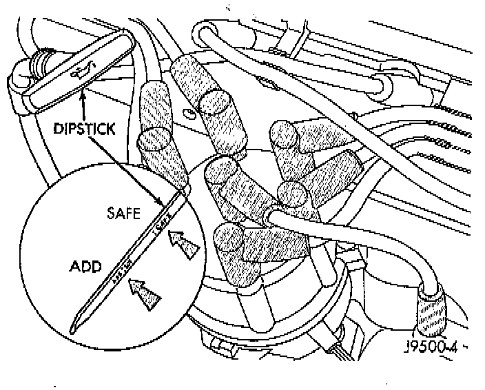

Engine Oil: Testing and Inspection

CAUTION: Do not overfill crankcase with engine oil, oil foaming and oil pressure loss can result.
NOTES:
^ Inspect engine oil level approximately every 800 kilometers (500 miles). Unless the engine has exhibited loss of oil pressure, run the engine for about five minutes before checking oil level.
^ Checking engine oil level on a cold engine is not accurate.
^ To ensure proper lubrication of an engine, the engine oil must be maintained at an acceptable level. The acceptable levels are indicated between the ADD and SAFE marks on the engine oil dipstick.
1. Position vehicle on level surface.
2. With engine OFF, allow approximately ten minutes for oil to settle to bottom of crankcase, remove engine oil dipstick.
3. Wipe dipstick clean.
4. Install dipstick and verify it is seated in the tube.
5. Remove dipstick, with handle held above the tip, take oil level reading.
6. Add oil only if level is below the ADD mark on dipstick.